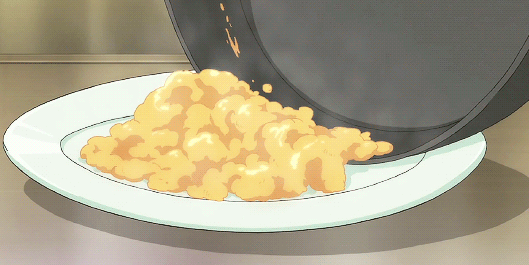

Here is the recipe for perfect scrambled eggs - soft, moist and delicious
Recipe by: me :)
Ingredients:
- 2 large eggs
- 20g of cold butter
- 1 clove of garlic
- Salt and pepper
Instructions:
- Put a knob of butter on the pan and turn on the stove on medium heat
- In a small bowl whisk the eggs and add salt and pepper
- After the butter is melted on the pan, put your eggs along with the garlic
- Using a spatula keep whisking the eggs - it will keep the eggs moist and create a perfect texture. When you see that the eggs are starting to stick to the pan, take the pan off the heat and keep whisking
- After a minute put the pan back on the stove and keep repeating this process. You can add some more butter in the meantime
- When you see that the eggs created a texture of your liking, you can stop whisking and you are ready to serve. You can garnish with more salt and pepper. Voila!
Go back to the main page